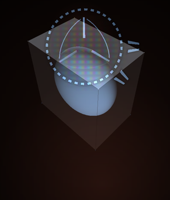
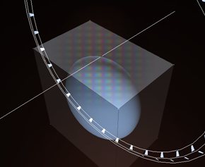

|
T H E M A N I P U L A T O R
The manipulator can do many things and what it will do depends on where you
grab it. If you grab it in the middle you can snap the manipulator's
position to a vertex without modifying the selection. This
is useful especially since it makes it possible to decide the
axis of a rotation. It is also useful because the position of
the Manipulator is used for snapping.
By grabbing and dragging one of the three straight lines you can translate your selection in
the X, Y and Z axis. Pressing the right mouse button while dragging the selection
enables snapping, making it possible to snap vertexes.
|

|
By Clicking inside one of the three arcs you can rotate the selection in one of the three axises.
When rotating, a circle appears with markings for degrees and fractions. By moving the
mouse over them you can easily snap the rotation to a specific angle. You can also
use the right mouse button to snap to a vertex.

|